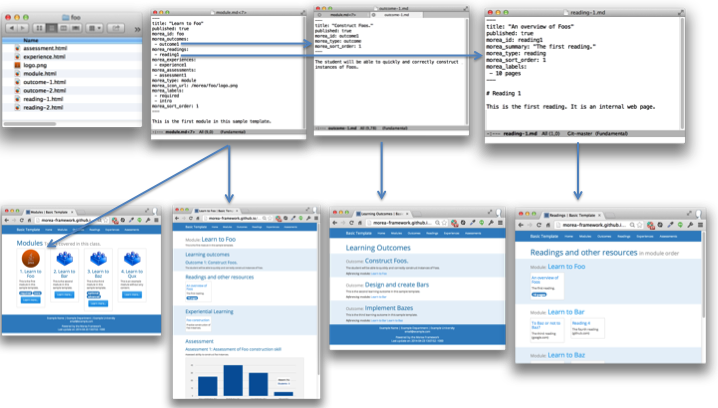

Basic concepts
To begin, here are the most important principles underlying the framework.
Morea defines five "entity types": module, outcome, reading, experience, and assessment.
A module is a container that holds a set of outcomes, readings, experiences, and assessments related to course content. Modules have a sort order, which allows you to organize modules into a sequence. Most courses consist of 6 to 30+ modules. A module can contain zero to many instances of outcomes, readings, experiences, and assessments. It is possible to define a module without zero outcomes, zero readings, zero experiences, and zero assessments, though we're not sure of the utility of such a module.
An outcome represents some kind of knowledge or capability that the student should acquire as a result of the readings and experiences in the associated module. A module can have multiple outcomes. Conversely, the same outcome can be associated with multiple modules. We find that a useful way to organize and express learning outcomes is through Bloom's revised taxonomy, which classifies outcomes into six categories: remembering, understanding, applying, analyzing, evaluating, and creating. The latter outcomes (analyzing, evaluating, and creating) are supposed to represent "high-order" cognitive skills.
A reading is an artifact that the student studies: it represents "passive" learning. Readings are typically chapters in a book, online web pages, and so forth.
In contrast to a reading, an experience represents a more "active" form of learning in which the student solves problems or performs other activities in order to acquire understanding and capability. Morea distinguishes between readings and experiences because modules that contain only readings without experiences will tend to have outcomes associated with lower levels of Bloom's taxonomy, while modules containing a mixture of readings and experiences are more likely to support outcomes at higher levels of Bloom's taxonomy.
An assessment is an activity that evaluates the success of the student in achieving the educational goals of the module. In the best case, the educational goals of the module are adequately expressed by learning outcomes, in which case each assessment should relate to one or more outcomes. The graphic Applying Bloom's Taxonomy in your Classroom provides various examples of how outcomes and assessments can be linked together. While Morea can help make linkages between outcomes and assessments clear, it is common to assess skills not encapsulated by outcomes, or desire outcomes that are not assessed.
{kind=link}
Morea generates five "views" of the content, each organized according to an entity.
Morea sites contain a navigation bar at the top of the page with links to pages that organize the content according to each of the five entities: modules, outcomes, readings, experiences, and assessments. For example, here is an example of the Readings page:

And here is an example of the Outcomes page:

You can see that the two pages highlight a single entity type but provide links to other entities for context.
We believe that presenting the content organized according to different entity types makes it easier for students and teachers to understand the conceptual structure of the course. For teachers, it also provides a useful way to see if the course is structurally coherent. For example, when the learning objectives are examined together, do they create a coherent set? For another example, are there assessments for each module, and if not, is that appropriate?
Every Morea entity has its own markdown file.
Every instance of a Morea entity (module, outcome, reading, experience, assessment) is represented by a single markdown file. There can also be other markdown files and other non-markdown files (such as the logo image file associated with each module).
All of your course content is located in the src/morea/ directory.
When you first clone a Morea site, you will find a potentially bewildering number of files and directories. For example:

This organization exists because the Morea framework is basically just a Jekyll site with a custom plugin to process the Morea markdown files.
Fortunately, the only files you will typically need to manage are all located in the src/morea directory. Here is an example of the src/morea directory from the basic-template system:

This folder contains all of the files you will want to manage as part of your course content.
You can organize the src/morea/ directory any way you like.
The Morea framework does not care how you organize the files within the src/morea directory. For example, you can place all of your files at the top level of this directory. Alternatively, and more typically, you can create subdirectories within the src/morea directory, one per module, as shown in the previous screenshot.
In addition, Morea does not care how you name files. In fact, it is possible to use the same file name in multiple modules (i.e. foo/module.md, bar/module.md, baz/module.md, and qux/module.md in the screenshot above)
It is the "front matter" in each Morea entity file that uniquely identifies it.
Morea does not care about directory structure nor file name, because it uses the front matter in the markdown file to uniquely identify each Morea entity and determine how they relate to each other. "Front matter" is a Jekyll term for key-value pairs represented via YAML notation and separated from the rest of the file contents by three dashes. For example, here is the front matter for a hypothetical module entity:
---
title: "Learn to Foo"
morea_id: foo
morea_outcomes:
- foo-outcome1
- foo-outcome2
morea_readings:
- foo-reading
morea_experiences:
- foo-experience
morea_assessments:
- foo-assessment
morea_type: module
morea_icon_url: /morea/images/foo.png
morea_labels:
- required
- intro
morea_sort_order: 2
---
So, even though each module (foo, bar, baz, qux) in the basic template system contains a file with the name module.md, the front matter in that file will be different in order to represent the unique structure of the four modules.
Note that while you can use the same name, you don't have to. You could name the file containing the front matter for the Foo module "module-foo.md". You could even name it "outcome.md" (although that would be really confusing.) The point is: Morea does not utilize file name information.
We will explain the front matter in more detail later in this User Guide.
Morea makes a "mirror image" of the src/morea directory in the published HTML site.
Because we want you to provide course content in the src/morea directory, and because course content can include (for example) image files, Morea creates a kind of "mirror image" of the src/morea directory in the published site so that your content can include links within itself as well as to external sites.
The basic rule is that markdown files are converted to HTML in the published site, and all other files get copied over without change. So, for example, here is the src/morea directory (on the left) and the site's published morea directory (on the right):

As you can see, the markdown files have become HTML, and the sole non-markdown file (logo.png) has been copied over unchanged. The directory structure below the morea/ directory is unchanged.
Anatomy of a Module
This section overviews the structure of a single module (called "Foo" in the basic-template system). Here is a graphic to help illustrates the various components:

The top row illustrates various "source" files, and the bottom row illustrates various "output" HTML pages produced from these files.
Morea file documentation
Here is the Morea file documentation.
Module
This is the module documentation.
Outcome
This is the outcome documentation.
Reading
Readings documentation.
Experience
Experiences.
Assessment
Assessment.
Workflow
Some typical issues in workflow.
An example editing session.
Example editing.
Upstream merging.
Upstream merging.